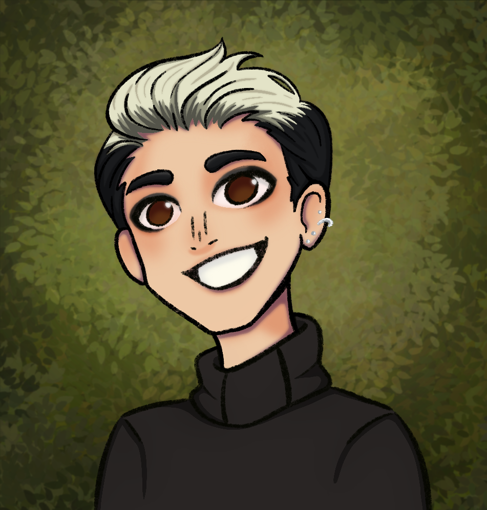
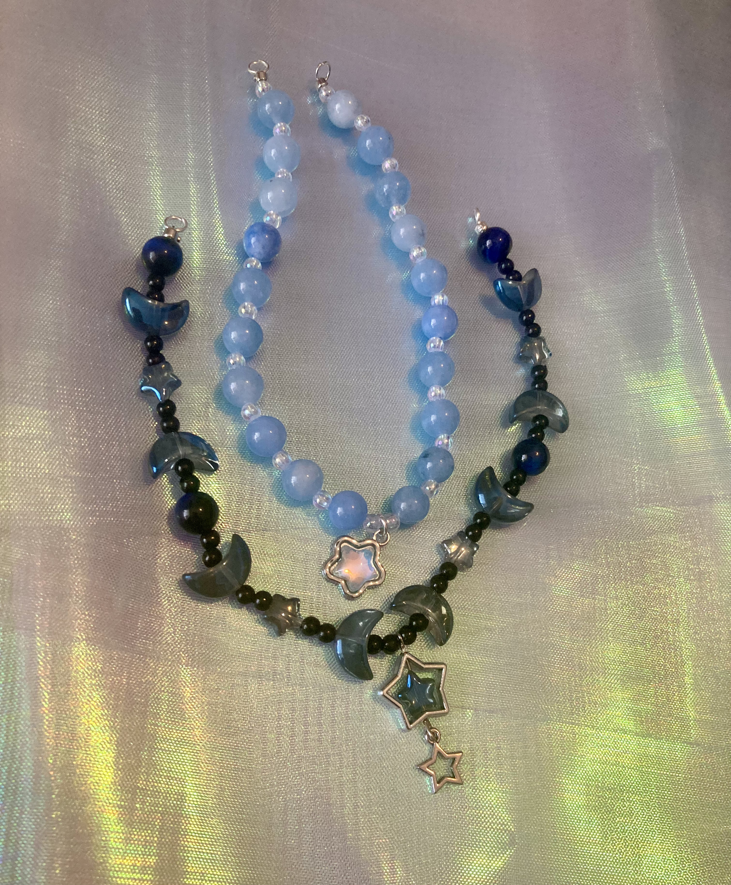

About Belnatra Creations
Belnatra Creations is where I create accessible, everyday art. This is the home for my smaller creative projects including stickers, art prints, jewelry, and various crafts. While my main portfolio focuses on animation and illustration, Belnatra Works is about bringing art into daily life through functional and wearable pieces.
Every item here is designed and made by hand. When you purchase from Belnatra Creations, you're supporting an independent artist and small business.
About the Artist

Hi, I'm Annabelle, but you can call me Belle. I'm an animation student at Webster University, set to graduate in 2027. Art has always been my way of processing and expressing experiences.
I'm inspired by stories that handle emotions with care. Films like WALL-E, Studio Ghibli works, and shows like The Owl House have taught me that art doesn't need to be loud to be powerful, it just needs to be honest.
Much of my work explores the feeling of not quite fitting in, and the importance of finding art that speaks to those experiences. I believe artists should create from the parts of themselves that feel unseen.
When you support small artists like me, you're not just buying a product. You're supporting someone's education, dreams, and ability to keep creating. You're also getting something unique that wasn't mass-produced.
Belnatra Creations is where I make art that's meant to be interacted with, stuck on laptops, hung on walls, and worn as jewelry. It's about creating pieces that might make someone's day a little brighter.
My Work

I create a variety of handmade items, including jewelry like this necklace featuring dark blue glass beads, with moons, stars, and spheres, in addition to silver star accents. Each piece is designed with attention to color, texture, and wearability.
My jewelry often incorporates celestial themes, with moons, stars, and deep blue colors reminiscent of night skies. The glass beads catch light beautifully, and each charm is carefully selected to create a balanced, wearable piece of art.
Beyond jewelry, I make vinyl stickers featuring original illustrations, art prints of both digital and traditional work, and various other crafts. Everything is made in small batches or as one-of-a-kind items.
The process varies by medium. Jewelry involves selecting and assembling components by hand. Stickers are designed digitally, then printed and cut. Art prints are carefully reproduced from original artwork.
Example of handmade jewelry: dark blue glass beads with moon and star charms
A Few Things About Me
- Possums and axolotls are my favorite animals
- I drink a lot of tea while working
- Most sticker designs start as doodles in my class notes
- I believe every laptop needs at least a few good stickers
Thank you for visiting and supporting small artists. It truly means a lot.